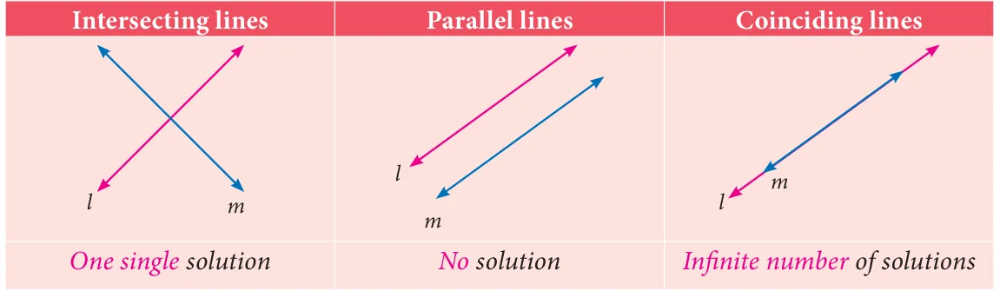
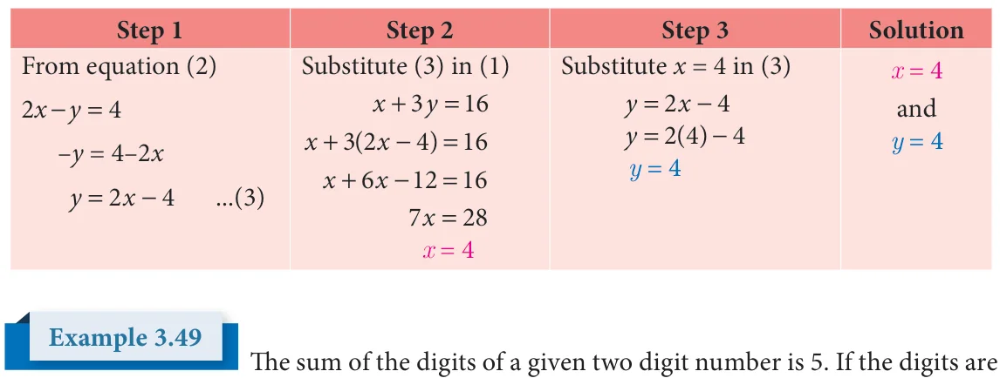
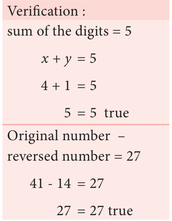

The second statement states that the length is 2 metres more than three times the width which is a straight line written as ... (2) Now we shall form table for the above equation (2). \(\frac{l=3b+}{8}\)

Points: (2,8), (4,14), (5,17), (8,26) The solution is the point that is common to both the lines. Here we find it to be (4,14).
We can give the solution to be \(b = 4\), \(l = 14\). Verification :
\(2(l+b) = = 3b + 2 ...(2) 2(14+4) = = 3(4) +2 2 \times 18 = = 12 + 2 36 = = 14\) true

- Draw the graph for the following
- \(y = 2x = - =\) \(\frac{3}{2}\) \(+ + =\)
- Solve graphically
- \(x + y = 7\); \(x - y = 3\) (ii) \(3x + 2y = 4\); \(9x + 6y - 12 = 0\)
- \(\frac{xy}{24} + =1\); \(\frac{xy}{24} + = 2\) (iv) \(x - y = 0\); \(y + 3 = 0\)
- \(y = 2x +1\); \(y + 3x - 6 = 0\) (vi) \(x = - 3\); \(y = 3\)
- Two cars are 100 miles apart. If they drive towards each other they will meet in 1 hour.
If they drive in the same direction they will meet in 2 hours. Find their speed by using graphical method.
Some special terminology
We found that the graphs of equations within a system tell us how many solutions are there for that system. Here is a visual summary.

z When a system of linear equation has one solution (the graphs of the equations intersect once), the system is said to be a consistent system. z When a system of linear equation has no solution (the graphs of the equations don't intersect at all), the system is said to be an inconsistent system. z When a system of linear equation has infinitely many solutions, the lines are the same (the graph of lines are identical at all points), the system is consistent.
Solving by Substitution Method
In this method we substitute the value of one variable, by expressing it in terms of the other variable to reduce the given equation of two variables into equation of one variable (in order to solve the pair of linear equations). Since we are substituting the value of one variable in terms of the other variable, this method is called substitution method.
The procedure may be put shortly as follows: Step 1: From any of the given two equations, find the value of one variable in terms of the other. Step 2: Substitute the value of the variable, obtained in step 1 in the other equation and solve it. Step 3: Substitute the value of the variable obtained in step 2 in the result of step 1 and get the value of the remaining unknown variable.
Solve the system of linear equations \(x + 3y =16\) and \(2x - y = 4\) by substitution method.
Solution
Given \(x + 3y = 16\) ... (1)
\(2x - y = 4\) ... (2)

reversed, the new number is reduced by 27. Find the given number.
Solution
Let x be the digit at ten's place and y be the digit at unit place.
Given that \(x + y = 5\) …… (1)

Given, Original number - reversing number= 27
\((10x +\) y) \(- (10y +\) x) \(= 27 10x - x + y - 10y = 27\)
\(9x - 9y = 27\)
\(\Rightarrow x - y = 3\) ... (2)
Also from (1), \(y = 5 - x\) ... (3)
Substitute (3) in (2) to get \(x - (5 -\) x) \(= 3\)

\(x - 5+ x = 3\)
\(2x = 8\)
\(x = 4\)
Substituting \(x = 4\) in (3), we get \(y = 5 - x = 5 - 4\)
\(y = 1\)
Thus, \(10x + y =10 \times 4 +1 = 40 +1 = 41\).
Therefore, the given two-digit number is 41.
- Solve, using the method of substitution
- \(2x - 3y = 7\); \(5x + y = 9\) (ii) \(1.5x + 0.1y = 6.2\); \(3x - 0.4y = 11.2\)
- 10% of \(x\) + 20% of \(y = 24\); \(3x - y = 20\) (iv) \(\sqrt{2}\, x - \sqrt{3}\, y = 1\); \(\sqrt{3}\, x - \sqrt{8}\, y = 0\)
- Raman's age is three times the sum of the ages of his two sons. After 5 years his age will be twice the sum of the ages of his two sons. Find the age of Raman.
- The middle digit of a number between 100 and 1000 is zero and the sum of the other
digit is 13. If the digits are reversed, the number so formed exceeds the original number by 495. Find the number.